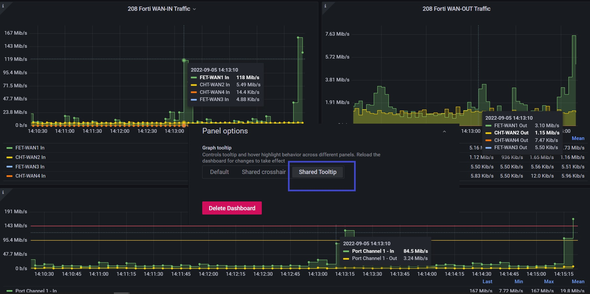

使用 snmp_exporter 抓取設備流量
Contents
前言
本篇筆記紀錄如何使用 snmp_exporter 搭配 prometheus 與 Grafana 來即時監控網路設備流量。
公司原先使用 LibreNMS 作為即時流量的依據，由於 default polling interval 是 5 分鐘抓取一次，而且一次抓取 (walk) 的 OID 也是世界多~
雖然說 LibreNMS 有提供 1-Minute Polling 的方式，不過一次抓取就是長長一串造成設備不必要的負擔，更可能造成風暴 (前一次抓取尚未完成，時間到了又必須進行下一次)。
況且即使 1-Minute polling 完美運作，對於流量的精細程度個人認為是遠遠不足的! 被打 DDoS 幾秒之內流量就可能飆高，若針對流量 moniting 顆粒度太大就失去了意義、無法反映實際狀況。
另外這次 Prometheus, Grafana 都是利用 Docker 安裝，建議參考先前寫的這篇 Docker 容器與容器的連結。Grafana + Prometheus + Blackbox_expoter
安裝 snmp_exporter
Prometheus 相關的 exporter 都是使用 Go lang 撰寫的，通常用 Go 寫的程式 (我目前遇到的啦) 都可以直接以 binary 直接執行! (例如: Hugo，連在 Windows x86 平台上也沒問題)
直接到 snmp_exporter - release 下載對應版本解壓縮後即可使用。
|
|
|
|
snmp exporter 提供預設的 config，裡面包含很多已經整理好的 module。我們可以透過 yq 方便查看!
install yq
|
|
|
|
▲ 官方建議如果要抓取 switch, access point, router 可以使用 if_mib module。
建立 systemd config
使用 systemd 來把 snmp exporter 變成 daemond 使用/管理上會比較方便。
|
|
因為 systemd config 內預設路徑是在 /home/prometheus/snmp_exporter/ 底下，使用 ln -s 連結過去。
|
|
|
|
▲ 官方提供的 systemd config 在 CentOS 7.9 2009 底下會不能運作，必須把 --config.file= 的 '' 拿掉才會正常!
(厚，這問題搞了五個小時! 直接用 shell 執行 ExecStart 的指令都沒有問題，不管以 root 或者 prometheus 身分執行)
附上錯誤訊息希望能被 Google 收納，拯救蒼生
|
|
安裝 Prometheus via Docker container
Prometheus Installation Document
|
|
|
|
▲ 將抓取時間更改為 5s
|
|
- Use host networking 讓 prometheus container 使用跟 host OS 相同的 network namespace，目的是讓 prometheus config 當中的 snmp_exporter IP address 保持使用
127.0.0.1。 - 將 prometheus config mapping (bind mount)，目的是方便修改。
- 使用名為 “prometheus” 的 volume，不然預設是隨機產生名稱。
Storage-Prometheus
Prometheus 預設保存 15d 的資料，若要增加執行時必須給參數 --storage.tsdb.retention.time。
Docker 的方式如下 (假設已經執行過上面的指令，已經建立一個名為 prometheus 的 Docker container)
|
|
▲ 除了加上 --storage.tsdb.retention.time=1y 將儲存時間改為 1y，還必須加上 --config.file=/etc/prometheus/prometheus.yml 才能正常執行。
註: 若沒加上 --storage.tsdb.path=/prometheus 預設是使用 /data。
參考資料，確認方式可以打開瀏覽器查看 http://<ip>:9090/flags
live reload
Prometheus 在 version 2.0 之後若要使用 curl -vX POST http://<ip>:<port>/-/reload 來 live reload 讓 prometheus 重新吃設定檔，必須在 prometheus 執行時加上 --web.enable-lifecycle 參數，不然會得到 403 Forbidden。
Prometheus 2.0 migration guide#prometheus-lifecycle
這對直接使用官方 container image 懶惰的我來說會有點麻煩，好險還有另外一種方法 Frequently Asked Questions#Can I reload Prometheus’s configuration? 傳送 SIGHUP。
|
|
▲ 雖然說這個指令能夠傳入 SIGHUP 讓 prometheus live reload config，但是遇到 Docker 這個問題 File mount does not update with changes from host 被我們 bind mount 進去 container 的 config file 其 inode 不會被更新到，白話文就是檔案內容沒有被更新啦! 所以 reload 也沒用 QQ，還是乖乖 docker restart prometheus 吧!
Reverse Proxy Prometheus with Nginx
|
|
|
|
|
|
PromQL
snmp_exporter 成功執行後，使用瀏覽器打開 http://<IP>:9116 即可看到 snmp_exporter 簡單明瞭的網頁畫面。使用者可以自行輸入 target 與欲使用的 module，或者利用 GET method 直接快速輸入 http://<IP>:9116/snmp?target=<target_IP>&module=<module_name> 即可拿到 snmp walk 來的資訊。
▲ 拿到這些資訊複製貼上到 Prometheus 就能 Query。
▲ ifHCInOctets 所記錄的是累積傳輸總量 (Byte)
▲ 因此要使用 prometheus 內建的 function irate。irate 會輸出 per-second rate ，其中 [5m] 即是 range vectors 算是使用 irate function 必須給予的參數 (註: 實測 irate range vectors 值不影響精準度)，而 *8 的部分目的是要將 Byte 轉換成 bits，因為我們講的 ‘妹’ 實際上是 Mbps。
對 instant vectors 或 range vectors 有興趣的可以參考:
Before Gafana
在進入 Grafana 做視覺化之前，我想要先把指標項目列出來! 這樣才能比較清楚到底在監控什麼、有哪些指標。
- Prometheus 抓取花費時間:
scrape_duration_seconds{instance="<instance_IP>", job="snmp"} snmp_exporter透過 snmp 抓取 target 花費時間:snmp_scrape_duration_seconds{instance="<instance_IP>", job="snmp"}(包含 walk + process 時間)snmp_exportersnmp walk 花費時間:snmp_scrape_walk_duration_seconds{instance="<instance_IP>", job="snmp"}ifHC總流量累積系列，使用 64 bits counter 來記錄 (避免 32 bits 最高只能記錄到 4GB 會出現的一些問題)- (承上) 其實
ifHC不只有總流量，還有封包種類。例如:ifHCInUcastPktsunicast packet,ifHCInBroadcastPkts廣播封包
▲ ifHC 流量相關系列。
▲ 與現有辦公室流量監控顆粒度差異比較。(雖然說這張圖 Prometheus 抓的設備 Port-Channel1 不完全是整間辦公室的 WAN 流量)
Grafana
|
|
- 因為我們 Prometheus docker container network type 是
host因此 Grafana docker container 不能使用--link prometheus:prometheus聯結。 - 如果有需要安裝 Grafana plugins => Install official and community Grafana plugins
- 預設登入帳號密碼都是
admin。 Sign in to Grafana - 使用 port 3000 (如果要更改成
80/tcp請自行修改 Dockerfile) - Configure a Grafana Docker image
▲ 更改 scrape interval 為 5s，因為我們 prometheus 就是設定 5s。
增加完 data source 之後就來拉 dashboard 吧!
▲ 為了後面方便將 query override，建議將 query name 命名!
▲ Panel options 可以設定 title 與 description。
▲ Legend (n.) 圖例。可以切換樣式、位置、顯示那些值。
▲ Axis 控管軸線，Timezone 預設 (default) 使用 browser 的時區。 順帶一提，Prometheus 預設使用 UTC 時區，而且不建議調整。
Scale 的部分則是 x 軸顯示數值的基準 (很難翻啦)
▲ 上面這張圖是以 log 10 為基底顯示。 (高中數學已還老師)

▲ Unit 有內建好幾種供選擇，Decimal 的部分則是小數精準度 (小數點後幾位)。
▲ Threshold 閥值設定。
▲ Tooltip 切換成 All 能顯示同一 data point 所有 query 的值。

▲ Dashboard 開啟 Shared Tooltip 效果。
Run Grafana behind a reverse proxy
Run Grafana behind a reverse proxy
Grafana 預設跑在 3000/tcp，而且我們沒有設定 domain name 給它，不想要跟 Grafana config 糾纏的話就在前面加個 Nginx reverse proxy 吧!
官方有提供正常版與 path rewrite 版範例 (例如: http://example.com/grafana 就需要用到)
|
|
|
|
|
|
Grafana alert 警報設定

圖片取自 [Grafana.com] Grafana Alerting
Grafana 在實作警報上面分為幾個步驟:
-
Alert rules，利用一條或多條 query/expression 制定警報規則，其「求值間隔」 (evaluation)、持續多久 fire the alert (意味著 pending 時長) 都是在 rule 設定。
警報能夠是全域的 (或者官方稱做 multi-dimensional) 或者單一 panel。 -
Labels，將 alert rule 打上標籤。Notification policy 以及 silences (靜音功能) 都是透過 label 來判斷。
目前想到的有serverity(嚴重程度),team(屬於哪個團隊的責任範圍),IDC(資料中心別),type(例如: VM,Network) -
Notification policies，通知政策。設定哪個警報要發、要發到哪裡 (contact point)。
-
Contact points，警報通路/管道。
▲ 切到 panel 的 alert 頁面就能針對單一 panel 加 rule。
▲ 在加 rule 之前記得先去建議一個 Folder，預設的 General 沒辦法放。
▲ 以 Expression 制定 alert rule。按下 run queries 可以看到警報狀態。
▲ 每 5 秒抓值一次，若符合 alert rule 持續 20 秒 => fire alert
但圖上可以看到 5s 實際上是不給設定的，因為 Grafana global evaluation 是 10s 不能設的比它還低!
再來下方定義當 no data/error timeout 時 alert state 為何。
▲ 設定這條 alert rule 的詳細資訊，其中 Folder, Group, Dashboard UID, Panel ID 是必填。
▲ 最後是上 label 的部分。
▲ 黃色的垂直線代表開始 pending，紅色垂直線才代表 alert fire。 (speedtest.net 開三個分頁錯開在測才勉強 fire 一發，早知道去拖大 image 下來)
▲ 接著我們切換到 alert setting 設定 contact point。
▲ Root policy (default policy) 是透過 EMail 發送。
▲ 我們額外設一個 routing policy，符合 IDC == 208 的透過 Grafana-LAB 這個 contact point 傳送。
▲ 發出來的警報。
▲ alert history。
使用 L2 Switch 遇到的問題: Can’t grab by VLAN ID
感謝網路組同仁以及 TWNOG
▲ VLAN interface 雖然說有 VLAN interface、我們也能夠對該 interface 抓取流量，但…. (請接下圖)
▲ VLAN ID 190 interface traffic，只有流進自己也就是 bind 在 vlan 190 的 192.168.xxx.xxx/24 的流量。換句話說: 無法抓取 per VLAN 的流量總和
▲ 從 LibreNMS 更能佐證這個事實。
結論: 無法從 L2 抓取 per VLAN traffic。請從 L3 gateway 抓取~
(以公司 production 環境來說，一條打在 L2 switch 的進線會包含了許多 VLAN ID。)
▲ 從 L3 device 就能抓到 per VLAN (by interface) 的流量囉!
註: 前提是 L3 device 身上有 interface。
參考資料
Author 老柯
LastMod 2022-09-07 (5cbf211)